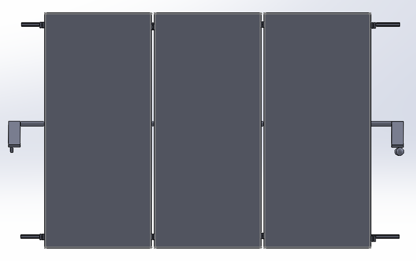
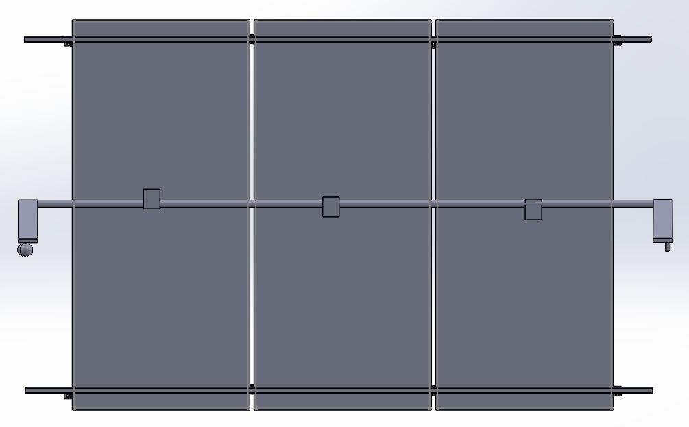

Montagem Placa Solar Solidworks
A montagem, do projeto das placas fotovoltaicas foi feito no programa SolidWorks, feito para rotacionar para os lados (horizontal) e para cima e para baixo (vertical). Com dois suportes triangulares, um fica responsável por fixar-se ao chão e o outro com rodinhas, sendo responsável por rotacionar.
Atrás possuindo suportes para as placas fotovoltaicas, sendo possível a realização do movento vertical. Todas as placas estão conectadas por uma barra cilindrica, assim todas são movimentadas em conjunto e sincronizadas.
São ao todo sete suportes para o funcionamento das rotações do projeto. Dois suportes triangulares, um com rodinhas o outro sem, com uma trava para fixar no chão. Três barras de ferro para juntar as três placas. Três engrenagens para ele ser rotacionado na vertical.
